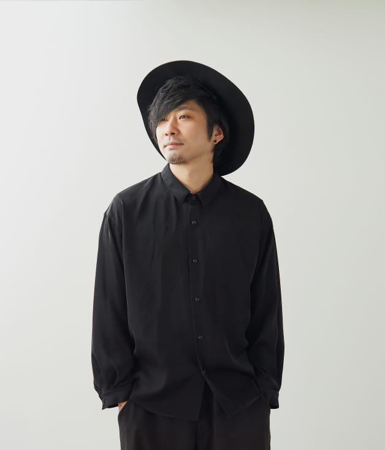
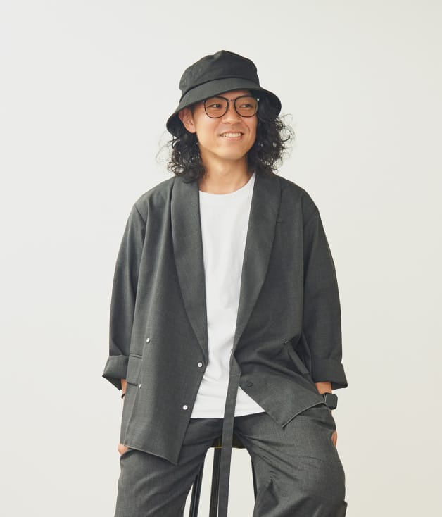
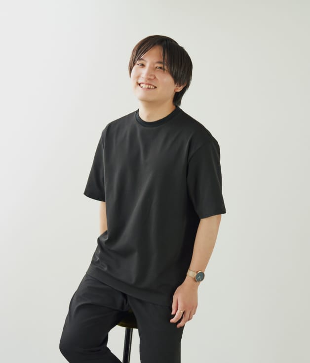
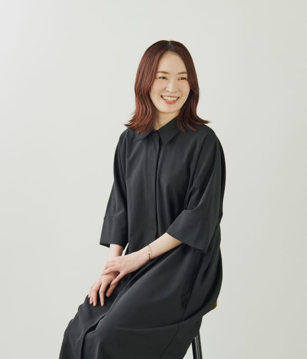
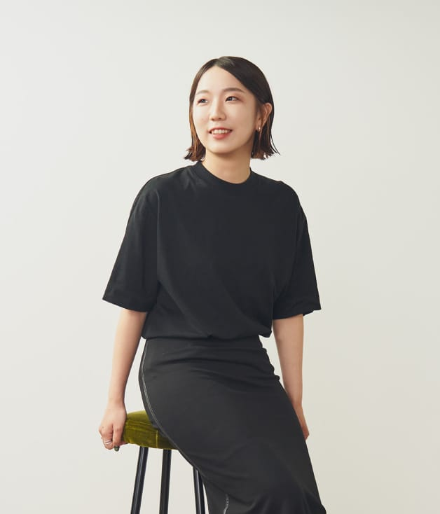
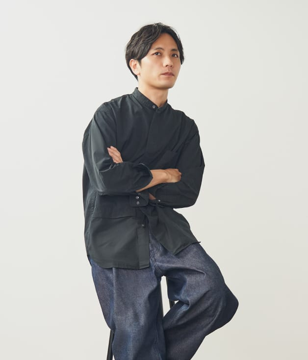
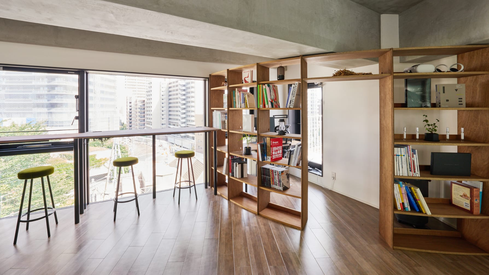
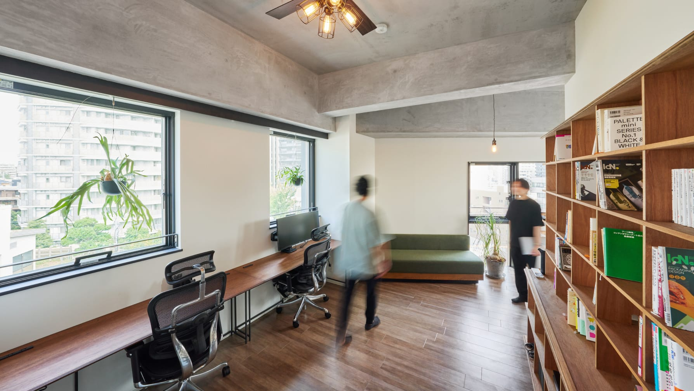
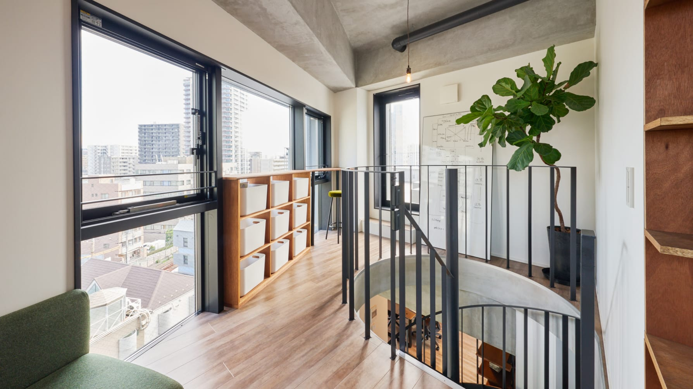

tactoの存在意義は、凝り固まった視点をほどき、あらゆる行きづまりや閉塞感を乗りこえることです。
ストーリーを起点とした新しい体験づくりを軸として、プロダクトやOMOのUI/UX、アプリやWEBサイトの企画制作、ブランドコミュニケーション開発などをトータルでサポートします。
シアトルのビジネスシーンでデザインの最前線を経験した板倉のグローバルスタンダードな視点や、好奇心旺盛で多様なスキルを持つメンバーの直観や理性のコラボレーションが、企業へ刺激と推進力をもたらします。
デザイナーを中心とする多様なプロフェッショナルが連携することで、アウトプットと戦略の乖離が無い一貫性のある取り組みを可能とします。
-

Hayato Itakura
Co-Founder /
Creative Director /
Designer20年間、アメリカのシアトルで生活。アメリカではシアトルに本社を持つ、Deloitte DigitalのCreative Directorとして、様々なビッグクライアントのデジタルトランスフォーメーションを手掛けた。日本のデザインを変えるべく、2017年に帰国、2020年に共同代表の中島と共にtacto inc.設立。
Profile
デザインが持つ「創造力」と「物語」を活かしてブランドやコミュニケーションを作るという考え方を常に軸足に置き、多数の企業・商品のブランディング、CI・VIデザイン、コミュニケーションデザイン、プロダクトデザインを手掛けている。
毎日ハット。元ミュージシャン（ベースボーカル）。休日はバーなどに生息。 -

Takuro Nakajima
Co-Founder /
Creative Director /
Strategist2009年より外資系広告会社にてキャリアを開始。
Profile
ヤングカンヌ日本代表に2年連続選出され、その受賞作をプロジェクト化してカンヌライオンズで入賞したことを機に、営業からクリエイティブへ転向。
その後デジタルエージェンシーでR&Dや新規事業開発に携わり、日本酒のAI味覚判定サービスYUMMY SAKEなどを立ち上げる。
34カ国への渡航歴があり、アマゾン川でピラニアを釣ったり、ペルーで標高4750mまで登山をした。世界各国のクリエイティブの動向にもアンテナを張っている。
好きな小説は「アルケミスト」「五分後の世界」「フラットランド」。 -

Kazuya Sakamoto
DesignerVisual Designer / UX Designerとしてデジタル領域のプロジェクトの情報設計からビジュアルデザインまで一貫して担当。
Profile
Webやアプリのインタラクション設計から事業のコンセプトムービーといったモーションデザイン領域まで幅広く手掛けており、
動きを用いたデザインでユーザーにとって本当に使いやすく、良い体験になるものを追求している。
2018年より博報堂アイ・スタジオにてキャリアを開始、約3年半デザイナーとしてアプリやWEBの情報設計/デザインを担当。
その後2021年11月にtactoへ入社。現在はブランドサイトやアプリ・サービス開発・パッケージデザインなど多くのブランディング案件に携わっている。 -

Natsumi Hashima
Corporate Designer沖縄（宮古島）生まれ、山梨育ち。
Profile
大学卒業後、CM制作会社→コンサルティング会社を経て現職。
新卒から一貫してコーポレート領域に従事し、現在は経理・人事労務・広報・総務など幅広く担当。
何事も"とりあえず、おもしろがる"を日々心掛けている。 -

Ayaka Mita
Art Director / Designer博報堂アイ・スタジオ新卒入社後、アートディレクターとしてインターフェースの設計・デザイン、グラフィックデザイン、CI・VIデザインなどを手掛ける。
Profile
大規模コーポレートサイト、ブランドサイト、キャンペーンサイト、サービス開発など、デジタル起点のブランディング案件を数多く担当。
人の心を動かすデザインを目標としている。
2022年1月よりtactoに参画。 -

Kaname Suzuki
Project Manager問題解決を得意とするプロジェクトマネージャー。
Profile
Webコンサルティング会社を経て、博報堂アイ・スタジオにてデジタル制作のプロデューサー/プロジェクトマネージャーを経験。ECサイト、グローバルブランドサイト、数万ページ規模の大規模リニューアル、UIUXリニューアルなど複雑かつ大規模なプロジェクトを多数経験。
2018年にファーストリテイリングに入社。Web制作の内製チーム立ち上げをゼロから担当し、50名規模で20カ国以上を担当する部門を組成しリーダーを務める。ミッション策定などの上位概念から運用設計/情報設計/サイト分析まで、各フェーズの業務をリーダー/プレイヤーとしてもリード。
2023年5月、tactoに参画。 -
 Seshiru Tanpo
Seshiru Tanpo
Designer札幌のブランディング会社に新卒入社後、3年勤務したのち、2023年にtactoに入社。
Profile
WEBデザインやグラフィックデザイン、CI・VIデザイン、イラストなどを手がける。
クライアントの個性を引き出せるようなコミュニケーションを心がけている。
ハマったらとことんやりこむ性格。
Experience Design Studioでは、社員に限らず様々な人々が訪れます。可動性の高いシートやホワイトボード、多様な作業スペース、目黒川を見下ろすバルコニーなどご用意していますので、お気軽にお越し下さい。



-
社名tacto株式会社 tacto Inc.
-
資本金300万円
-
事業内容デザイン業およびデザインに
係るコンサルティング業 -
設立2020年8月
-
所在地
プロジェクトの
ご依頼
ご依頼
要件の定まっていない「０次案件」は、私達の得意とする分野です。
もちろん、UIデザインやコンセプト設計といった個別のご相談も歓迎です。
まずは、お話しましょう！